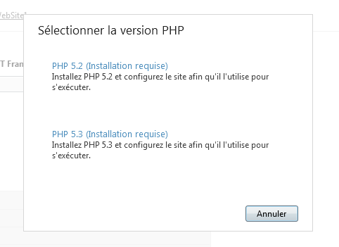
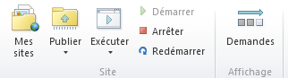
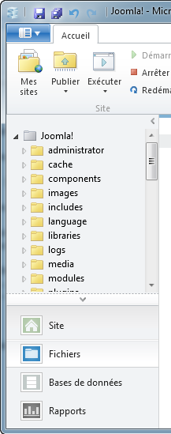

Déployez vos projets web facilement avec WebMatrix !
WebMatrix est un outil gratuit de développement web proposé par Microsoft. Sa particularité ? Il est très complet et facile à utiliser, il va bien plus loin qu'un simple éditeur de texte classique ! C'est un outil tout-en-un qui gère :
Edition de fichiers source HTML, CSS, Javascript, PHP, ASP .NET...Permet de remplacer Notepad++
Administration de la base de données : MySQL, SQL Server...Permet de remplacer PHPMyAdmin
Tests et analyse du site : rapports d'erreurs, rapports SEO (référencement)...
Publication automatique sur le serveur web : FTP, Web Deploy...Permet de remplacer Filezilla
Contrairement à ce qu'on pourrait croire, WebMatrix gère très bien des technologies Open source comme PHP et MySQL et il permet de développer avec des CMS Open source tels que Wordpress, Joomla, Drupal...
Dans ce premier chapitre, nous allons découvrir ensemble WebMatrix : qu'est-ce que c'est ? A quoi ça sert ? A quoi ça ressemble ? Qu'est-ce qu'on peut faire avec ?
Nous allons l'installer et faire un tour d'horizon du logiciel, puis créer un premier projet web. A la fin de ce chapitre, vous saurez déjà utiliser les fonctionnalités de base les plus simples de WebMatrix !
WebMatrix est un outil tout-en-un destiné aux développeurs de sites web qui programment en HTML, CSS, PHP, ASP .NET, etc. Il a été créé pour prendre en compte la plupart des besoins courants des développeurs web :
Edition du code source (que ce soit du HTML, du CSS, du PHP...)
Administration de la base de données
Tests et analyse du site
Configuration du serveur
Envoi des fichiers en ligne
Toutes ces opérations sont disponibles directement depuis WebMatrix. Il n'est pas nécessaire de jongler entre plusieurs logiciels.
Par exemple, si vous développez des sites web en PHP, vous avez besoin :
D'un éditeur de texte (Notepad++...), pour modifier le code source du site.
D'un serveur web (Apache...), le programme qui distribue les pages web au navigateur.
D'un système de gestion de base de données (MySQL...), pour stocker des informations (liste des utilisateurs du site, messages, etc.).
D'un outil d'administration de base de données (phpMyAdmin...), pour gérer la base de données.
D'un logiciel FTP (FileZilla...), pour envoyer le site sur un serveur web, afin qu'il soit accessible par tous les internautes.
WebMatrix est capable de faire tout cela au sein d'une même interface.
WebMatrix unifie plusieurs outils déjà existants, d'accord, mais qu'apporte-t-il à part ça ? :o
Il permet de gagner beaucoup de temps car il est capable d'installer et configurer des logiciels automatiquement. Par exemple, vous voulez utiliser PHP ? Pas de problème, en un clic WebMatrix va télécharger la dernière version de PHP, il l'installe et il la configure pour vous.

Un des gros points forts de WebMatrix, que nous verrons dès ce chapitre, est qu'il connaît de nombreux outils Open source :
Wordpress
Drupal
Joomla
Moodle
phpBB
DotNetNuke
Umbraco
etc.
WebMatrix "connaît" déjà tous ces outils ainsi que de nombreux autres. Il est capable d'en télécharger la dernière version, de l'installer et de la configurer en quelques clics.
Si vous créez régulièrement des sites basés sur Drupal, Joomla ou Wordpress par exemple, WebMatrix peut vous faire gagner beaucoup de temps.
Si vous utilisez d'autres outils, ou que vous avez votre propre modèle de site, sachez qu'il est possible de gérer ses modèles dans WebMatrix. Nous verrons cela dans un chapitre un peu plus avancé. ;)
Installer WebMatrix est tout ce qu'il y a de plus simple. Rendez-vous sur le site de WebMatrix et cliquez sur "Télécharger".
Pour installer WebMatrix, vous téléchargez en fait un programme appelé "Web Platform Installer" qui va télécharger et installer tout seul les outils dont vous avez besoin.
Web Platform Installer se charge, recherche les dernières versions des logiciels dont vous allez avoir besoin et vous propose ensuite d'installer WebMatrix :
WebMatrix est vraiment très simple à prendre en main, vous allez voir ! :) Nous allons ici faire un petit tour du logiciel pour que vous ayez un aperçu de l'ensemble de ses fonctionnalités, puis nous créerons un premier projet pour clore ce chapitre de présentation.
Ecran d'accueil
Lorsque vous lancez WebMatrix, un écran d'accueil vous permet de choisir parmi les principales fonctionnalités du logiciel :
Voici ce que signifient chacune de ces sections :
Mes sites : permet d'ouvrir un projet de site web que vous avez déjà créé dans WebMatrix. Pour l'instant, un mini-projet WebSite1 est déjà présent et vous permet de commencer à tester WebMatrix rapidement.
Site à partir de la galerie Web : probablement une des fonctionnalités les plus intéressantes de WebMatrix. On vous propose une sélection d'outils célèbres (notamment Open source), parmi Wordpress, Joomla, Drupal, phpBB... Choisissez simplement sur quelle base vous souhaitez lancer votre site web. Vous gagnerez beaucoup de temps !
Site à partir du modèle : vous pouvez partir d'un modèle de site web pour commencer rapidement un site tout neuf. Vous pouvez aussi choisir de créer un nouveau site à partir d'un modèle vierge.
Site à partir du dossier : si vous avez déjà votre site web sur votre disque dur et que vous souhaitez l'ouvrir dans WebMatrix, utilisez cette section pour indiquer le dossier de base (dossier racine) de votre site. Celui-ci sera alors ouvert dans WebMatrix.
Je ne saisis pas bien la différence entre "Site à partir de la galerie Web" et "Site à partir du modèle" ? Ils permettent tous les deux de partir sur une base pour créer rapidement un nouveau site, non ? :euh:
Oui, mais il y a une différence majeure :
Galerie Web : ce sont des modèles de sites web basés sur des outils célèbres, comme Wordpress. Ces outils existaient déjà avant l'apparition de WebMatrix : le logiciel se contente de vous en simplifier l'installation. La galerie est mise à jour régulièrement par Microsoft pour tenir compte des dernières versions et proposer de nouveaux outils. Utilisez-le si vous avez besoin de créer un site doté de nombreuses fonctionnalités rapidement.
Modèles : ces modèles sont déjà stockés sur votre ordinateur et sont très simplifiés. Utilisez-le si vous souhaitez créer un nouveau site simple.
Vous pouvez jeter un oeil au site "WebSite1" déjà présent dans "Mes sites" pour découvrir l'interface de WebMatrix.
Ce site sert d'exemple et contient très peu de fichiers, il est parfait pour commencer à découvrir WebMatrix. :)
La fenêtre principale de WebMatrix
Double-cliquez sur le nom du site WebSite1 pour ouvrir la fenêtre principale de WebMatrix :
Que d'informations sur cette fenêtre ! :o Que faut-il retenir ?
La zone centrale contient de nombreux liens qui amènent à différentes parties du logiciel, mais vous pouvez y accéder aussi en passant par les menus (ce que je vous recommanderai de faire en pratique). Vous pouvez lire deux informations intéressantes :
URL : http://localhost:8080. C'est l'adresse qui vous permet de tester votre site.
Chemin d'accès : E:\Documents\My Web Sites\WebSite1. C'est là que se trouvent stockés les fichiers de votre site sur votre disque dur.
Vous avez donc l'adresse pour tester votre site et le lieu où sont stockés les fichiers, deux informations essentielles. :)
Vous pouvez cliquer sur l'adresse http indiquée par WebMatrix pour lancer le site d'exemple, ou bien cliquer en haut sur le bouton "Exécuter" de la barre d'outils :
Notez que ce bouton vous permet de lancer le site dans le navigateur de votre choix, et même d'ouvrir tous les navigateurs en même temps pour tester le rendu du site !
Si vous ouvrez le site WebSite1 dans votre navigateur, vous devriez voir une page de présentation comme ceci :
</lien>
C'est à ceci que ressemble le site pour l'instant.
Retournez dans WebMatrix, nous allons étudier ses menus plus en profondeur. Pour commencer, la barre d'outils en haut :

Elle comprend les éléments suivants :
Mes sites : ouvre un autre site.
Publier : envoie le site sur le Web une fois qu'il est terminé (par FTP par exemple). Nous aurons l'occasion de découvrir cela dans le chapitre suivant avec l'exemple d'un projet Wordpress.
Exécuter : lance le site dans un ou plusieurs navigateurs comme nous venons de le voir.
Démarrer / Arrêter / Redémarrer : permet de contrôler l'état du serveur web. C'est le programme qui permet d'exécuter les pages (combiné à PHP par exemple). Le plus connu s'appelle Apache, mais dans le cas de WebMatrix c'est un programme similaire de Microsoft qui s'exécute : IIS Express. Le fonctionnement est le même. Si vous cliquez sur "Arrêter", vous constaterez que vous ne pourrez plus afficher le site dans votre navigateur. Le redémarrage du serveur web est parfois nécessaire pour prendre en compte une nouvelle configuration.
Demandes : affiche les logs correspondant aux traces de visites de votre site. C'est un outil très intéressant pour le débuggage.
Afficher les logs
Si vous cliquez sur "Demandes", vous voyez s'afficher dans WebMatrix un résumé des dernières demandes reçues par le serveur web :
A chaque fois que vous chargez une page ou une image de votre site web dans votre navigateur, une ligne s'affiche ici. Vous pouvez grâce à cela repérer d'éventuelles erreurs (pages qui n'existent pas) et évaluer le temps que mettent les pages à se générer.
Les principales sections de WebMatrix
En bas à gauche de WebMatrix vous trouverez un accès aux principales sections du logiciel :
Site : c'est là que nous avons commencé. Vous y trouvez des informations générales sur votre site, vous pouvez analyser les logs et modifier les principaux paramètres du serveur.
Fichiers : c'est l'éditeur de fichiers. C'est là que vous verrez le code source de votre site et que vous pourrez le modifier. Une fois chaque fichier enregistré, vous pouvez directement rafraîchir la page dans votre navigateur web pour voir les changements.
Base de données : c'est un éditeur du contenu de votre base de données où sont stockées les informations sur votre site (comme la liste des membres). Vous pouvez voir ce que stocke votre site et modifier la base de données à partir de là.
Rapports : permet d'analyser votre site à la recherche d'erreurs ou de problèmes de référencement. C'est donc ce qu'on appelle un "outil SEO" (Search Engine Optimization) qui vous conseille pour que votre site soit le mieux compris possible par les moteurs de recherche. Il vous dira par exemple s'il manque un titre à votre site, s'il y a des liens morts, etc.
Pour découvrir les différentes sections de WebMatrix (en particulier Fichiers, Base de données et Rapports que nous n'avons pas vus), je vous donne rendez-vous dans le chapitre suivant. Nous étudierons un projet WebMatrix concret basé sur le fameux moteur de blogs Wordpress. ;)
Vous avez fait un bon tour de WebMatrix dans ce premier chapitre. Vous devez commencer à avoir une bonne idée des possibilités qu'il offre.
Cependant, avez-vous tout vu ? Non, loin de là. ;) WebMatrix est très efficace quand il s'agit de créer un projet à partir d'un CMS connu. Par exemple, WebMatrix sait gérer et configurer Wordpress et Joomla.
Vous voulez créer un site web sous Wordpress ? Nous allons voir ensemble dans le prochain chapitre comment cela fonctionne avec WebMatrix. Si vous préférez utiliser Joomla avec WebMatrix, lisez directement le chapitre 3.
Pour comprendre comment créer un projet WebMatrix de A à Z, le mieux est encore de faire ça ensemble avec un exemple !
Imaginons que vous ayez besoin de créer un blog (pour vous ou pour un client). Vous souhaitez utiliser Wordpress car c'est l'outil le plus célèbre et qu'il est très puissant, soit. Mais par où faut-il commencer ?
Dans ce chapitre nous verrons toutes les étapes de la création d'un projet Wordpress sous WebMatrix, de la configuration au déploiement du blog en ligne !
Sélectionnez d'abord "Site à partir de la galerie Web" sur l'écran d'accueil de WebMatrix. La fenêtre vous demande alors sur quel outil de base vous souhaitez créer votre site. Sélectionnez Wordpress en double-cliquant dessus :
Lorsque vous sélectionnez Wordpress, WebMatrix se prépare alors à télécharger tous les outils dont vous avez besoin pour lancer un site WordPress si vous ne les avez pas déjà :
Wordpress
PHP
MySQL
WebMatrix va télécharger la dernière version de WordPress et les versions compatibles de PHP et MySQL. Cliquez sur "J'accepte" pour lancer le téléchargement et l'installation.
Après un temps de téléchargement (plus ou moins long selon votre connexion), WebMatrix vous demande de renseigner quelques informations pour préparer la base de données qui va stocker les billets de votre futur blog.
Vous pouvez laisser la plupart des options par défaut, en particulier laissez le champ "Serveur de base de données" à "localhost". Cela vous permettra de travailler avec une base de données locale, c'est-à-dire stockée sur votre ordinateur (afin que vous fassiez vos tests avant d'envoyer votre site en ligne).
Une fois que c'est fait, votre Wordpress est installé (eh oui, déjà !). WebMatrix ouvre alors sa fenêtre principale que vous connaissez déjà :
Il semble y avoir à première vue beaucoup d'informations, ne vous laissez pas surprendre. La fenêtre principale vous donne, au centre, les deux informations essentielles dont vous avez besoin :
URL (ici http://localhost:51671) : c'est à cette adresse web que vous pouvez visualiser et donc tester votre site.
Chemin d'accès (ici E:\Documents\My Web Sites\Wordpress) : c'est le nom du dossier où sont stockés les fichiers de votre site. Vous y retrouverez les fichiers de Wordpress.
Pour tester le site, cliquez sur l'URL ou cliquez sur le bouton "Exécuter" dans la barre d'outils. Je vous rappelle que ce bouton vous permet de lancer le site dans le navigateur de votre choix, et même d'ouvrir tous les navigateurs en même temps pour tester le rendu du site !
Le site que vous avez créé, en l'occurrence un site basé sur Wordpress, s'ouvre alors dans votre navigateur :
Mais... je ne vois pas mon blog ?! :( On dirait encore un assistant d'installation !
C'est normal, pas de panique. Wordpress demande simplement quelques informations très simples pour être enfin prêt :
Le nom de votre site / blog
Votre nom d'utilisateur (pour administrer le blog)
Votre mot de passe (toujours pour l'administration du blog).
Votre e-mail
Il s'agit simplement d'informations pour finaliser l'installation.
Vous ne le voyez pas, mais WebMatrix a configuré Wordpress pour vous de façon transparente ! Cela vous a fait gagner le temps de la configuration.
Revenons à WebMatrix. Cliquez en bas à gauche de la fenêtre sur "Fichiers" pour faire apparaître tous les fichiers de votre site Wordpress :
Vous y êtes ! Il vous suffit de modifier les fichiers en double-cliquant dessus. :)
WebMatrix reconnaît et colore le code source comme tout bon éditeur de texte qui se respecte. Les fonctionnalités offertes dans la barre d'outils sont somme toute basiques, comme vous pourrez le constater.
L'élément le plus intéressant est le menu Lancement / Microsoft Visual Studio qui vous permet de faire du débuggage pas à pas dans Visual Studio, et donc de comprendre comment vos variables évoluent au fur et à mesure de l'exécution de la page. Pour cela, il vous faut installer Visual Studio Express qui est gratuit.
Dans le cas d'un site Wordpress, il est conseillé d'ouvrir le dossier wp-content/themes et d'y créer un dossier (du nom de votre choix) pour personnaliser l'apparence de votre blog. La création de thèmes pour Wordpress est un peu hors-sujet pour ce tutoriel, mais vous pouvez en apprendre plus sur le wiki Wordpress si le sujet vous intéresse.
Comme je vous l'ai dit, WebMatrix vous permet d'administrer votre base de données (ici MySQL). Vous pouvez donc voir les données qui sont stockées (par exemple les billets de blog), les modifier, ajouter des tables de base de données, etc.
Cliquez tout simplement en bas à gauche de WebMatrix sur "Base de données". Vous pouvez alors dérouler le contenu de votre base et voir ce qu'elle contient :
Etudions un peu cet outil d'administration de base de données plus en détail :
Le menu de gauche vous permet de parcourir les tables de votre base de données Wordpress. Si vous double-cliquez sur l'une d'elles, vous pouvez afficher son contenu dans la zone du centre. Chaque ligne correspond à une entrée différente. Sur ma capture ci-dessus, j'ai ouvert la table des billets de blog (wp_posts) qui contient actuellement 3 entrées, donc 3 billets.
Il est possible de modifier directement le contenu de la table, à la manière d'un tableur.
Etudions un peu les possibilités offertes par la barre d'outils :
Nouvelle table : permet de créer une nouvelle table en plus de celles déjà existantes.
Définition / Données : permet de changer la vue. Par défaut vous êtes en mode "Données", vous voyez donc le contenu de la table. Si vous passez en mode "Définition", vous pouvez changer sa structure en modifiant les options des champs (colonnes).
Nouvelle colonne et suppression : permet d'ajouter ou supprimer un champ (colonne) dans la table. Attention, évitez de supprimer un champ déjà créé par Wordpress ou celui-ci risque de ne plus fonctionner !
Ajout de relations : permet de créer des clés étrangères entre les tables pour les lier entre elles.
Ajout d'index : permet d'ajouter des index (ou de les supprimer) dans vos tables. Les index permettent à la base de données d'effectuer des recherches plus rapides sur certains champs que vous indiquez.
Actualiser / supprimer des données : vous permet de rafraîchir l'affichage ou de supprimer une ligne entière de données.
Tous les outils dont vous avez besoin sont là. Si vous avez déjà travaillé avec phpMyAdmin, cette section de WebMatrix devrait vous être familière. ;)
Analyser la qualité de votre site avec les rapports SEO
Cliquez sur la section "Rapports" en bas à gauche de WebMatrix pour ouvrir l'outil de reporting. C'est un outil très intéressant que je vous conseille d'exécuter à la fin de vos développements. WebMatrix va vous dire ce qu'il pense de votre site ! ;)
Une attention toute particulière est donnée au SEO (Search Engine Optimization, optimisation pour les moteurs de recherche). WebMatrix va vérifier que votre site est le plus adapté possible aux robots des moteurs de recherche, pour que votre référencement soit le meilleur possible.
Cliquez sur le bouton "Nouveau" en haut de la barre d'outils pour créer un nouveau rapport :
Vous devez remplir quelques informations avant de lancer le rapport : le nom du rapport, l'URL d'accueil de votre site, etc. Les informations fournies par défaut suffisent généralement.
Je vous recommande d'ouvrir la section "Paramètres avancés" afin d'avoir le même affichage que moi. Ces paramètres avancés vous permettront de configurer WebMatrix avant qu'il n'analyse votre site.
Dans la section des "Paramètres avancés", vous pouvez modifier en particulier le nombre maximal d'URL à analyser. En effet, WebMatrix va "sauter" d'URL en URL (page en page) de votre site, et si celui-ci contient un très grand nombre de pages, la génération du rapport peut prendre longtemps ! Je trouve la valeur par défaut de 20 000 un peu élevée, vous devriez commencer avec une valeur de 1000 ou moins pour commencer. Les autres options permettent de configurer WebMatrix afin qu'il se comporte ou non comme un vrai moteur de recherche : doit-il suivre les attributs "nofollow" des balises HTML s'il en trouve ? Doit-il ignorer les pages marquées en "noindex" ?
Lancez ensuite l'analyse et... patientez. ;) Cela peut prendre du temps en fonction du nombre d'URL à analyser.
Une fois que c'est terminé, WebMatrix vous présente un résumé des erreurs et des conseils qu'il a à vous donner :
A vous ensuite de lire chacune de ces erreurs. WebMatrix vous conseille sur la façon de les résoudre : là il manque une description dans la balise <meta />, ici le lien pointe vers une page qui n'existe pas, etc.
Si vous cliquez sur le bouton "Performances" de la barre d'outils, vous obtenez un résumé du temps de chargement de chacune de vos pages :
N'hésitez pas à utiliser les outils de filtre afin d'afficher uniquement les pages les plus lentes !
A vous de jouer maintenant : corrigez votre site afin d'avoir les meilleurs résultats possibles ! :) Une fois que vous avez fait les améliorations nécessaires, vous pouvez cliquer sur "Réexécuter" dans la barre d'outils pour relancer un rapport.
Ouf ! Vous avez mis en place votre site, vous l'avez modifié pour vos besoins, et vous êtes maintenant prêt pour l'envoyer sur le Web ? :)
Pour que tous les internautes aient accès à votre site, il vous faut faire appel à un hébergeur de site web. WebMatrix vous propose différentes offres, mais vous pouvez utiliser n'importe quel autre hébergeur de votre choix. Celui-ci devra vous communiquer des informations pour que vous puissiez vous connecter à ses serveurs afin d'envoyer votre site :
L'adresse IP (ou nom d'hôte) du serveur
Votre login
Votre mot de passe
Une fois que vous avez ces informations, retournez dans la section "Site" (à l'aide du lien en bas à gauche) et cliquez sur "Publier" dans la barre d'outils.
WebMatrix vous demande alors les informations dont il a besoin pour envoyer votre site sur le serveur :
Le premier champ "Protocole" est mis par défaut à "Web Deploy". C'est la méthode d'envoi de votre site sur le serveur. Seuls certains hébergeurs supportent cette méthode d'envoi (qui a l'avantage d'être entièrement automatisée), mais dans votre cas il faudra très probablement sélectionner "FTP" à la place.
Renseignez ensuite les autres champs d'après les informations en votre possession : l'adresse du serveur FTP, votre login, votre mot de passe, etc.
Une fois que c'est fait, validez. WebMatrix va tester la bonne connexion avec le serveur et vous proposera ensuite d'envoyer tous les fichiers. Une fois l'envoi terminé, votre site sera enfin accessible sur le Web ! :)
La nouvelle version WebMatrix 2 propose désormais un plug-in spécial qui vous permet de développer et publier vos sites directement dans Windows Azure, la plateforme dédiée à l’hébergement cloud de Microsoft.
Pour comprendre le fonctionnement de Windows Azure, le Site du Zéro propose un cours.
Comme vous l'avez vu, WebMatrix peut prendre en charge la création d'un projet basé sur Wordpress de A à Z. Il est capable de télécharger la dernière version et d'effectuer tout seul les configurations pour avoir un site prêt à l'emploi en deux clics. C'est un de ses plus gros points forts.
Une fois le site chargé, libre à vous ensuite de modifier le code, de changer la structure de la base de données, etc.
Lorsque vous avez terminé, un petit tour sur le générateur de rapports SEO & performances pour savoir si vous n'avez rien oublié et si votre site fonctionne correctement. Lorsque vous êtes prêts, vous pouvez envoyer votre site sur un serveur en FTP directement depuis WebMatrix. :)
Vous voyez donc pourquoi on parle d'un logiciel tout-en-un : il comporte de nombreux outils pour vous aider à créer votre site web efficacement.
WebMatrix est un outil particulièrement adapté lorsqu'on doit développer un projet basé sur un outil connu, tel que le célèbre CMS Joomla.
Joomla est un CMS (Content Management System) open-source. Il permet de créer un site web rapidement et se veut simple d'utilisation : aucune connaissance en programmation n'est requise pour modifier le contenu des pages, ce qui en fait un outil grand public !
Dans ce chapitre nous verrons toutes les étapes de la création d'un projet Joomla sous WebMatrix, de la configuration au déploiement du site en ligne !
Note : ce chapitre reprend les explications de la gestion d'un projet Wordpress avec WebMatrix et les adapte dans le cadre d'un projet Joomla.
Sélectionnez d'abord "Site à partir de la galerie Web" sur l'écran d'accueil de WebMatrix. La fenêtre vous demande alors sur quel outil de base vous souhaitez créer votre site. Sélectionnez Joomla en double-cliquant dessus :
Lorsque vous sélectionnez Joomla, WebMatrix se prépare alors à télécharger tous les outils dont vous avez besoin pour lancer un site Joomla si vous ne les avez pas déjà :
Joomla
PHP
MySQL
WebMatrix va télécharger la dernière version de Joomla et les versions compatibles de PHP et MySQL. Cliquez sur "J'accepte" pour lancer le téléchargement et l'installation.
Après un temps de téléchargement (plus ou moins long selon votre connexion), WebMatrix vous demande de renseigner quelques informations pour préparer la base de données qui va permettre le bon fonctionnement de Joomla.
Vous pouvez laisser la plupart des options par défaut, en particulier laissez le champ "Serveur de base de données" à "localhost". Cela vous permettra de travailler avec une base de données locale, c'est-à-dire stockée sur votre ordinateur (afin que vous fassiez vos tests avant d'envoyer votre site en ligne).
Une fois que c'est fait, votre site Joomla est installé (eh oui, déjà !). WebMatrix ouvre alors sa fenêtre principale que vous connaissez déjà :
Il semble y avoir à première vue beaucoup d'informations, ne vous laissez pas surprendre. La fenêtre principale vous donne, au centre, les deux informations essentielles dont vous avez besoin :
URL (ici http://localhost:27587) : c'est à cette adresse web que vous pouvez visualiser et donc tester votre site.
Chemin d'accès (ici E:\Documents\My Web Sites\Joomla!) : c'est le nom du dossier où sont stockés les fichiers de votre site. Vous y retrouverez les fichiers de Joomla.
Pour tester le site, cliquez sur l'URL ou cliquez sur le bouton "Exécuter" dans la barre d'outils. Je vous rappelle que ce bouton vous permet de lancer le site dans le navigateur de votre choix, et même d'ouvrir tous les navigateurs en même temps pour tester le rendu du site !
Le site que vous avez créé, en l'occurrence un site basé sur Joomla, s'ouvre alors dans votre navigateur :
La configuration de Joomla a été faite automatiquement par WebMatrix à l'aide des informations que vous avez fournies dans les écrans précédents.
Revenons à WebMatrix. Cliquez en bas à gauche de la fenêtre sur "Fichiers" pour faire apparaître tous les fichiers de votre site Joomla :

Vous y êtes ! Il vous suffit de modifier les fichiers en double-cliquant dessus. :)
WebMatrix reconnaît et colore le code source comme tout bon éditeur de texte qui se respecte. Les fonctionnalités offertes dans la barre d'outils sont somme toute basiques, comme vous pourrez le constater.
L'élément le plus intéressant est le menu Lancement / Microsoft Visual Studio qui vous permet de faire du débuggage pas à pas dans Visual Studio, et donc de comprendre comment vos variables évoluent au fur et à mesure de l'exécution de la page. Pour cela, il vous faut installer Visual Studio Express qui est gratuit.
A vous d'adapter les fichiers de Joomla selon vos besoins. Vous devriez en particulier vous intéresser au dossier templates/ qui vous permet de modifier le design de votre site Joomla. La création de templates Joomla n'est pas le sujet de ce tutoriel, mais vous pourrez trouver des informations pour vous guider sur le wiki de Joomla.
Comme je vous l'ai dit, WebMatrix vous permet d'administrer votre base de données (ici MySQL). Vous pouvez donc voir les données qui sont stockées (par exemple les billets de blog), les modifier, ajouter des tables de base de données, etc.
Cliquez tout simplement en bas à gauche de WebMatrix sur "Base de données". Vous pouvez alors dérouler le contenu de votre base et voir ce qu'elle contient :
Etudions un peu cet outil d'administration de base de données plus en détail :
Le menu de gauche vous permet de parcourir les tables de votre base de données Joomla. Si vous double-cliquez sur l'une d'elles, vous pouvez afficher son contenu dans la zone du centre. Chaque ligne correspond à une entrée différente. Sur ma capture ci-dessus, j'ai ouvert la table qui stocke les menus de mon site (joomla.jos_menu).
Il est possible de modifier directement le contenu de la table, à la manière d'un tableur.
Etudions un peu les possibilités offertes par la barre d'outils :
Nouvelle table : permet de créer une nouvelle table en plus de celles déjà existantes.
Définition / Données : permet de changer la vue. Par défaut vous êtes en mode "Données", vous voyez donc le contenu de la table. Si vous passez en mode "Définition", vous pouvez changer sa structure en modifiant les options des champs (colonnes).
Nouvelle colonne et suppression : permet d'ajouter ou supprimer un champ (colonne) dans la table. Attention, évitez de supprimer un champ déjà créé par Joomla ou celui-ci risque de ne plus fonctionner !
Ajout de relations : permet de créer des clés étrangères entre les tables pour les lier entre elles.
Ajout d'index : permet d'ajouter des index (ou de les supprimer) dans vos tables. Les index permettent à la base de données d'effectuer des recherches plus rapides sur certains champs que vous indiquez.
Actualiser / supprimer des données : vous permet de rafraîchir l'afficage ou de supprimer une ligne entière de données.
Tous les outils dont vous avez besoin sont là. Si vous avez déjà travaillé avec phpMyAdmin, cette section de WebMatrix devrait vous être familière. ;)
Analyser la qualité de votre site avec les rapports SEO
Cliquez sur la section "Rapports" en bas à gauche de WebMatrix pour ouvrir l'outil de reporting. C'est un outil très intéressant que je vous conseille d'exécuter à la fin de vos développements. WebMatrix va vous dire ce qu'il pense de votre site ! ;)
Une attention toute particulière est donnée au SEO (Search Engine Optimization, optimisation pour les moteurs de recherche). WebMatrix va vérifier que votre site est le plus adapté possible aux robots des moteurs de recherche, pour que votre référencement soit le meilleur possible.
Cliquez sur le bouton "Nouveau" en haut de la barre d'outils pour créer un nouveau rapport :
Vous devez remplir quelques informations avant de lancer le rapport : le nom du rapport, l'URL d'accueil de votre site, etc. Les informations fournies par défaut suffisent généralement.
Je vous recommande d'ouvrir la section "Paramètres avancés" afin d'avoir le même affichage que moi. Ces paramètres avancés vous permettront de configurer WebMatrix avant qu'il n'analyse votre site.
Dans la section des "Paramètres avancés", vous pouvez modifier en particulier le nombre maximal d'URL à analyser. En effet, WebMatrix va "sauter" d'URL en URL (page en page) de votre site, et si celui-ci contient un très grand nombre de pages, la génération du rapport peut prendre longtemps ! Je trouve la valeur par défaut de 20 000 un peu élevée, vous devriez commencer avec une valeur de 1000 ou moins pour commencer. Les autres options permettent de configurer WebMatrix afin qu'il se comporte ou non comme un vrai moteur de recherche : doit-il suivre les attributs "nofollow" des balises HTML s'il en trouve ? Doit-il ignorer les pages marquées en "noindex" ?
Lancez ensuite l'analyse et... patientez. ;) Cela peut prendre du temps en fonction du nombre d'URL à analyser.
Une fois que c'est terminé, WebMatrix vous présente un résumé des erreurs et des conseils qu'il a à vous donner :
A vous ensuite de lire chacune de ces erreurs. WebMatrix vous conseille sur la façon de les résoudre : là il manque une description dans la balise <meta />, ici le lien pointe vers une page qui n'existe pas, etc.
Si vous cliquez sur le bouton "Performances" de la barre d'outils, vous obtenez un résumé du temps de chargement de chacune de vos pages :
N'hésitez pas à utiliser les outils de filtre afin d'afficher uniquement les pages les plus lentes !
A vous de jouer maintenant : corrigez votre site afin d'avoir les meilleurs résultats possibles ! :) Une fois que vous avez fait les améliorations nécessaires, vous pouvez cliquer sur "Réexécuter" dans la barre d'outils pour relancer un rapport.
Ouf ! Vous avez mis en place votre site, vous l'avez modifié pour vos besoins, et vous êtes maintenant prêt pour l'envoyer sur le Web ? :)
Pour que tous les internautes aient accès à votre site, il vous faut faire appel à un hébergeur de site web. WebMatrix vous propose différentes offres, mais vous pouvez utiliser n'importe quel autre hébergeur de votre choix. Celui-ci devra vous communiquer des informations pour que vous puissiez vous connecter à ses serveurs afin d'envoyer votre site :
L'adresse IP (ou nom d'hôte) du serveur
Votre login
Votre mot de passe
Une fois que vous avez ces informations, retournez dans la section "Site" (à l'aide du lien en bas à gauche) et cliquez sur "Publier" dans la barre d'outils.
WebMatrix vous demande alors les informations dont il a besoin pour envoyer votre site sur le serveur :
Le premier champ "Protocole" est mis par défaut à "Web Deploy". C'est la méthode d'envoi de votre site sur le serveur. Seuls certains hébergeurs supportent cette méthode d'envoi (qui a l'avantage d'être entièrement automatisée), mais dans votre cas il faudra très probablement sélectionner "FTP" à la place.
Renseignez ensuite les autres champs d'après les informations en votre possession : l'adresse du serveur FTP, votre login, votre mot de passe, etc.
Une fois que c'est fait, validez. WebMatrix va tester la bonne connexion avec le serveur et vous proposera ensuite d'envoyer tous les fichiers. Une fois l'envoi terminé, votre site sera enfin accessible sur le Web ! :)
Comme vous l'avez vu, WebMatrix peut prendre en charge la création d'un projet basé sur Joomla de A à Z. Il est capable de télécharger la dernière version et d'effectuer tout seul les configurations pour avoir un site prêt à l'emploi en deux clics. C'est un de ses plus gros points forts.
Une fois le site chargé, libre à vous ensuite de modifier le code, de changer la structure de la base de données, etc.
Lorsque vous avez terminé, un petit tour sur le générateur de rapports SEO & performances pour savoir si vous n'avez rien oublié et si votre site fonctionne correctement. Lorsque vous êtes prêts, vous pouvez envoyer votre site sur un serveur en FTP directement depuis WebMatrix. :)
Vous voyez donc pourquoi on parle d'un logiciel tout-en-un : il comporte de nombreux outils pour vous aider à créer votre site web efficacement.
Si vous voulez aller plus loin, n'hésitez pas à consulter les pages MSDN sur WebMatrix. Vous y trouverez un certain nombre d'informations complémentaires pour aller plus loin avec le logiciel !


{kind=link}
{kind=link}
{kind=link}
{kind=link}